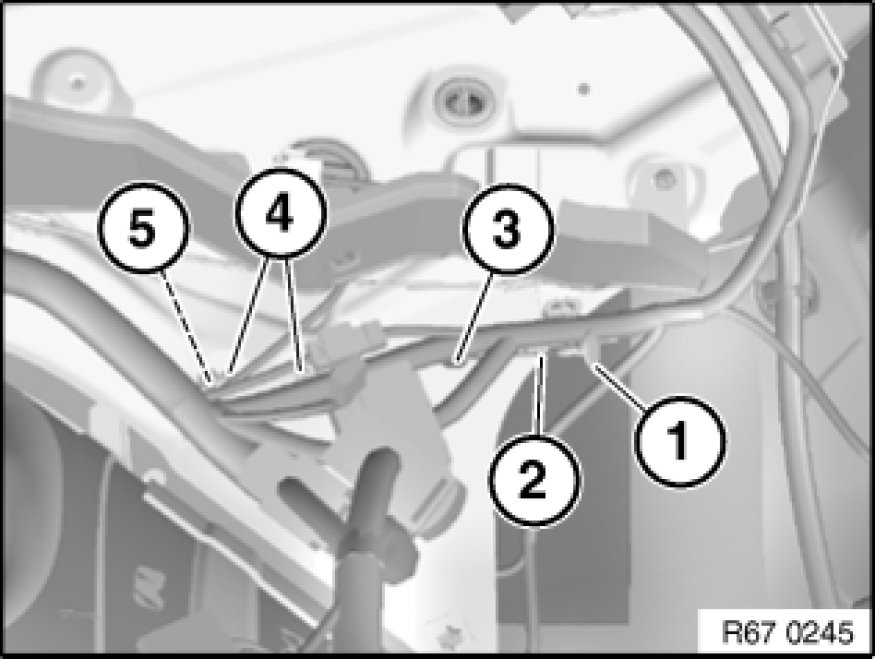
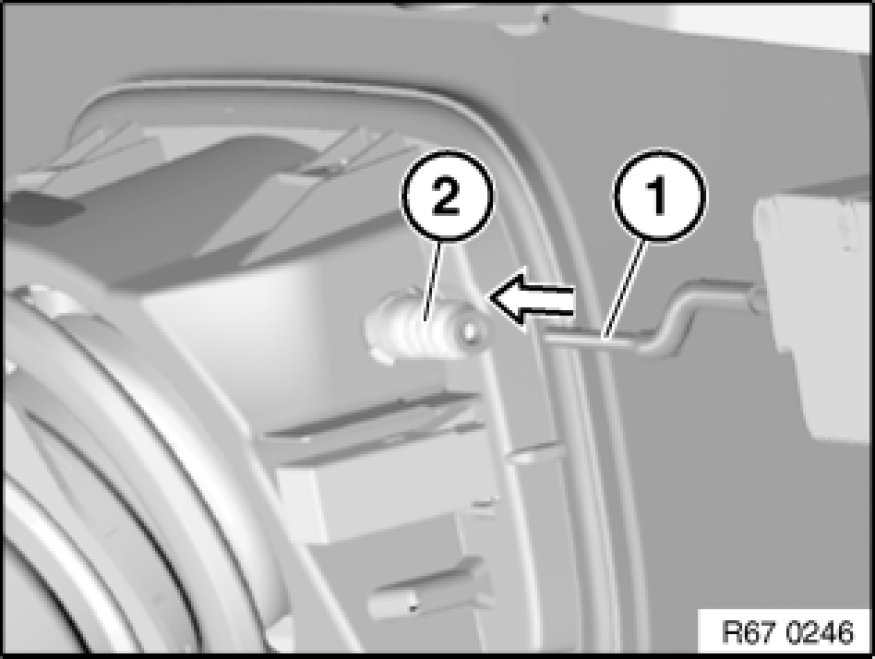
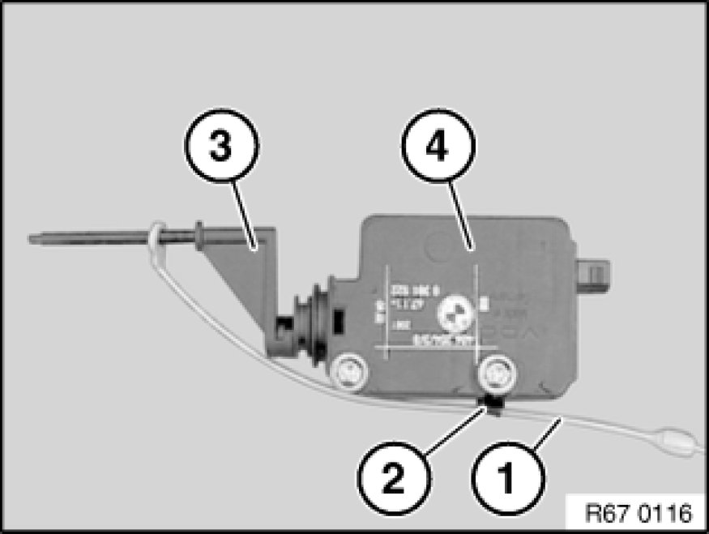

Removing and Installing/Replacing Servodrive for Tank Filler Flap
67 11 555 - Removing and installing/replacing servodrive for tank filler flap

Necessary preliminary tasks:
- Remove right luggage compartment wheel arch trim .

Unclip emergency actuator (1) on emergency actuator pull strap (2).
Feed out emergency actuator pull strap (2) through opening (3).
Slacken screws (4) and feed servodrive for tank filler flap (5) towards rear out of retaining plate.
If necessary, carry out adjustment of servodrive for tank filler flap (5) via elongated holes of retaining plate. It must be possible to lock or unlock the fuel filler flap completely.
Disconnect associated plug connection and remove servodrive for tank filler flap (5).

Installation:
Insert servodrive for tank filler flap (1) in direction of arrow into gaiter (2).

Replacement:
Unhook emergency actuator pull strap (1) from clip (2) and remove from locking pin (3) of servodrive for fuel filler flap (4).